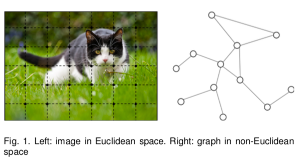
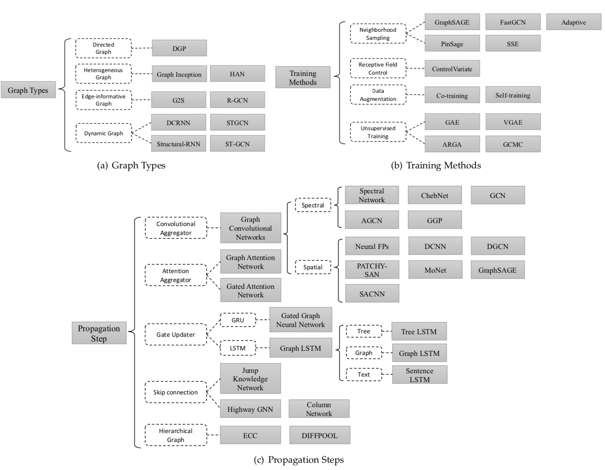
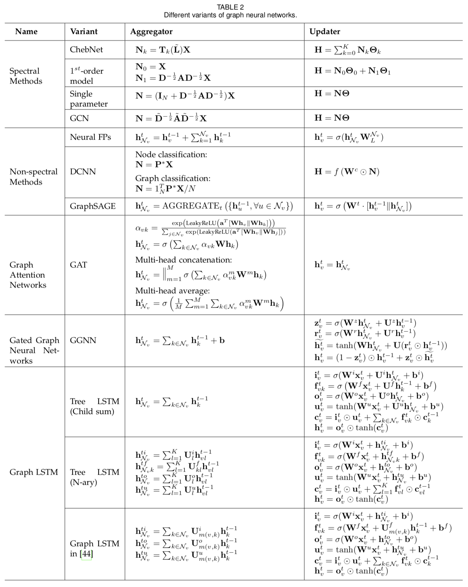
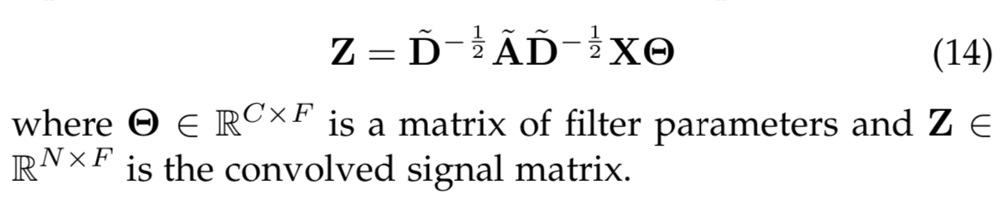
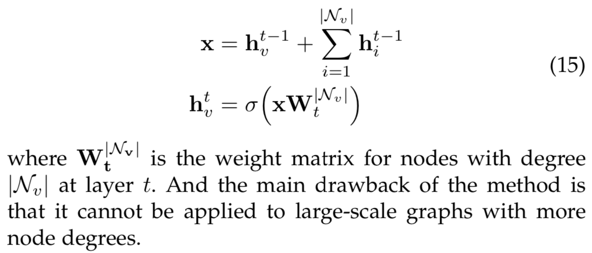
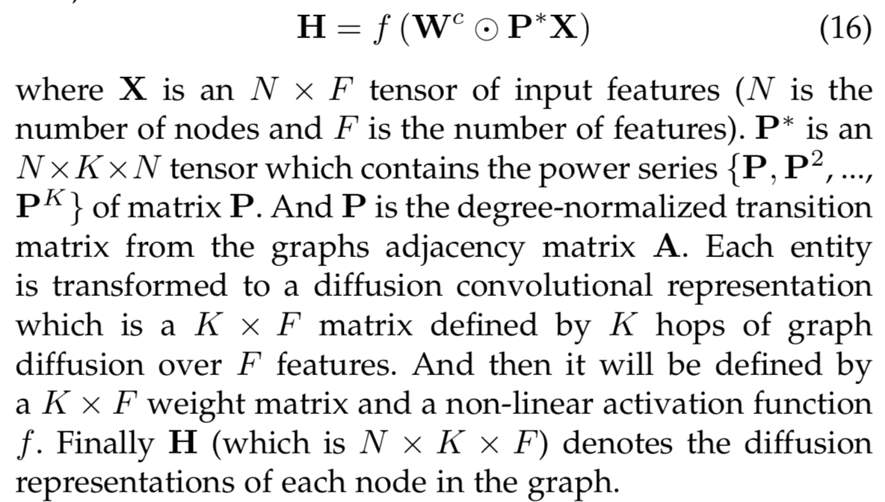
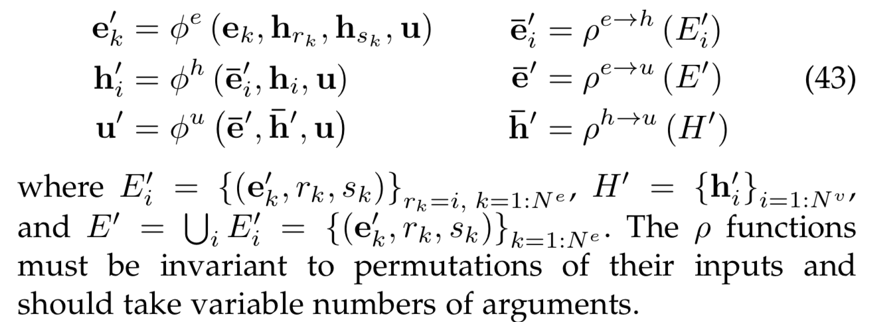
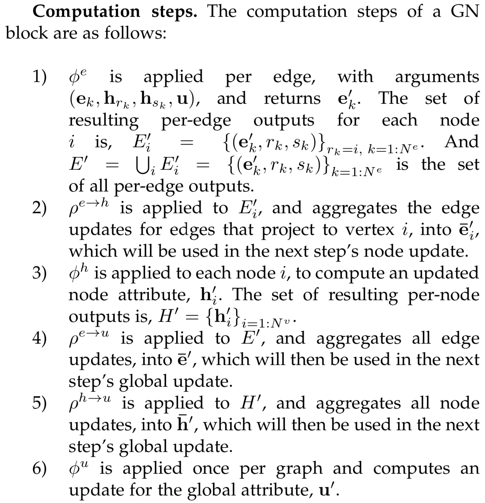
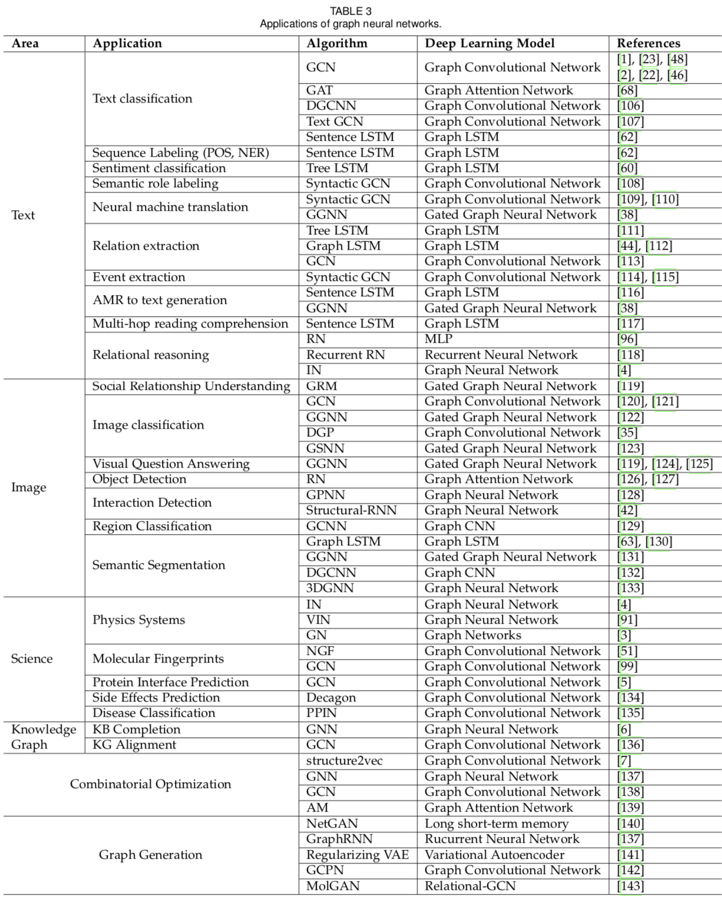
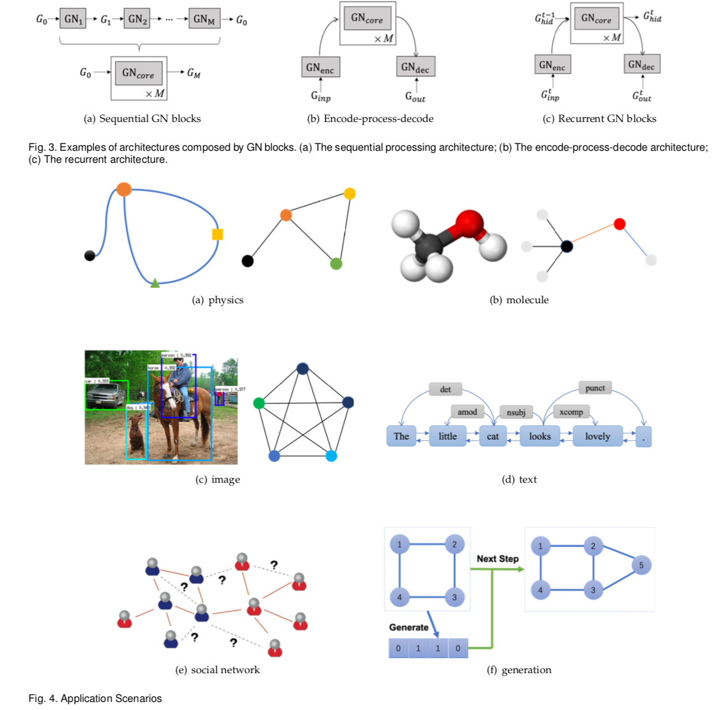

论文地址：Graph Neural Networks:A Review of Methods and Applications
摘要
许多学习任务需要处理图数据，因为图数据包含了元素之间丰富的关系信息。物理系统建模，学习分子指纹，预测蛋白质结构，和疾病分类需要一个模型从图输入中进行学习。其他领域，从非结构化数据如文本和图像中学习，推理提取的结构，比如句子的依存树、图像的场景图，这些是重要的研究主题需要图推理模型。图卷积神经网络属于连接模型，通过图中节点之间信息传递刻画了图的依存关系。不像标准的神经网络，图神经网络可以以任意深度从节点邻居表示信息。尽管前期的GNNs对于固定点训练困难，但是最近前沿的图结构，优化技巧和并行计算推动了GNNs的发展并获得成功。近些年，图神经网络的变体比如图卷积网络（GCN）、图注意网络（GAT）、门控图神经网络（GGNN）已经被证明在上述应用中有突破性的表现。在本篇概述中，我们提供了现存的图神经网络的回顾、系统的应用分类，和对于未来研究的4点开放性建议。
1 介绍
图是一种数据结构，建模了一系列的对象（节点）和它们的关系（边）。最近，使用机器学习的方法来研究图已经激发起了越来越大的关注。图具有强大的表达能力，比如图可以被用来表示一个巨大的系统在不同的领域中，包括社会学（社会网络）、神经科学（生物系统和蛋白质-蛋白质连接网络）、知识图谱和许多其他研究领域。作为一种独特的非欧式数据结构，图分析聚焦在节点分类、连接预测和聚类。图神经网络（GNNs）是基于图域处理的深度学习方法。由于其具有可信力的表现和高解释性，GNN已经成为了图分析领域的一大利器。在下面的段落中，我们将会说明图神经网络的基本动机。
GNNs的第一个动机源于卷积神经网络（CNNs），CNNs有提取多尺度的局部空间特征，并将它们组合起来构建高度表达的表征能力，以至于可以突破大多数机器学习领域并且开辟深度学习的新纪元。当在对CNNs和图的深入研究中，我们发现CNNs的要点包括：局部连接、权重共享、多层结构。这些也是在处理图数据的重要问题，因为1）图是很典型的局部连接结构；2）与传统的谱图理论相比权重分享能减少计算开销；3）多层结构可以处理分级模式，也就是可以刻画不同大小的特征。然而，CNNs只能操作规则的欧式数据如图像（2D网格）和文本（1D序列），这些数据结构也可被视为图的实例。因此，可以自然而然的将CNNs应用到图上。如下图1，定义局部卷积过滤器和池化操作是困难的，阻碍了CNN从欧式数据域到非欧式数据域的应用。

其他的动机来源于图嵌入，图嵌入是指学习图节点、边或子图用低维向量表示。在图分析的领域，传统的机器学习方法通常以来复杂的特征工程，因为不可改变性和高消耗性导致效果不太好。随着表示学习和词嵌入的思想，DeepWalk被视为第一个基于表示学习的图嵌入方法，将SkipGram模型应用于生成的随机游走。相似的方法比如node2vec，LINE和TADW也实现了突破。然而这些方法有两个严重的缺点。1）在encoder中没有参数被共享，导致计算没有效率，意味着参数的数量随着节点的数量线性增长。2）直接嵌入方法缺乏生成能力，意味着无法处理动态的图或推广到新图。
基于CNNs和图嵌入，图神经网络（GNNs）来共同聚合来自图结构的信息。因此它们可以建模输入或输出元素的组成和它们的依赖。更强的，图神经网络可以使用RNN核在图上同步的建模传播过程。
在接下来的章节中，我们解释为什么图神经网络值得去探究。1）标准的神经网络如CNNs和RNNs不能合适的处理图输入，因为它们按照特定的顺序来堆叠特征，然而图中没有天然的节点顺序。为了完全的表示一个图，我们应该遍历所有可能的顺序作为模型的输入，如CNN和RNN，这在计算时非常冗余。 为了解决这个问题，GNN分别在每个节点上传播，忽略了节点的输入顺序。换句话说，GNNs的输出对于节点输入顺序是不变的。2）图的一条边表示两个节点之间的依存信息。在标准的神经网络中，依赖信息仅仅被视为是节点的特征。然而GNNs可以通过图结构进行传播，而不是将其作为元素特征的一部分。通常，GNNs通过邻居节点状态的权重和更新节点的隐含状态。3）推理是非常重要的研究主题对于高水平的人工智能，人类大脑的推理过程几乎就是基于从日常经验中提取的图。标准的神经网络已经有能力生成合成图像以及文档通过学习数据的分布，然而它们依然不能从大量的实验数据中学习图推理。然而，GNNs探索从非结构化数据比如场景图片和故事文档中生成图，这是一种强有力的神经模型对于高级别的人工智能。最近，没有经过训练的具有简单架构的GNN已经被证明表现不错。
现在已经存在了若干关于神经网络的综合评述，Geometric deep learning on graphs and manifolds using mixture model cnns提出一个统一的架构，MoNet，推广CNN架构到非欧数据域（图和流型数据），并且该框架可以概括图上的几种谱方法以及流形上的一些模型。Geometric deep learning: going beyond Euclidean data概述了几何深度学习，展示了其问题、难点、解决方法、应用以及未来方向。Geometric deep learning on graphs and manifolds using mixture model cnns和Geometric deep learning: going beyond euclidean data侧重于推广卷积到流型数据域，然而在本文中我们仅仅关注定义在图上的问题，并且我们还调研使用在图神经网络中的其他机制，比如门机制（gate mechanism）、注意力机制（attention mechanism）、和残差连接（skip connection）。Neural message passing for quantum chemistry提出信息传递神经网络（MPNN），可以概括一些图神经网络和图卷积神经网络的方法。Non-local neural networks提出了非局部神经网络（NLNN），统一了一些自注意方法。然而，在原始的论文中并没有很明确的定义模型。侧重于具体应用的领域，Neural message passing for quantum chemistry和Non-local neural networks仅仅给了如何使用其框架推广其他模型的示例，并且它们没有提供对其他图形神经网络模型的评论。Attention models in graphs: A survey对图注意模型进行了评述。Relational inductive biases, deep learning, and graph networks提出了图网络框架，有强大的能力去推广其他模型。然而，图神经模型是高度抽象的，Relational inductive biases, deep learning, and graph networks仅仅能给出应用的粗糙分类。
Deep learning on graphs: A survey和A comprehensive survey on graph neural networks是GNNs最新的综述文章，它们主要侧重于GNN的模型。A comprehensive survey on graph neural networks将GNNs分成5组：图卷积网络、图注意网络、图自动编码器、图生成网络和图时-空网络。本文于A comprehensive survey on graph neural networks有不同的分类，2.2.2节介绍图卷积网络和图注意网络因为它们有助于介绍传播步骤。2.2.1节介绍图时空网络因为此模型经常用在动态图中。2.2.3节介绍图自编码因为它们用无监督方法进行训练。最后，我们介绍在图生成的应用中引入图生成网络。
本文中我们提供图神经网络模型全面的概述和系统的应用分类。总之，本文对图神经网络进行了广泛的研究，并做出了以下贡献。
- 我们提供了对现有图神经网络模型的详细评论。 我们介绍了原始模型，其变体和几个通用框架。 我们研究了该领域的各种模型，并提供了统一的表示，以在不同的模型中呈现不同的传播步骤。 通过识别相应的聚合器和更新器，可以使用我们的表示轻松区分不同的模型。
- 我们系统地对应用程序进行分类，并将应用程序划分为结构场景，非结构场景和其他场景。 我们为每个场景提供了几个主要应用及其相应的方法。
- 我们为未来的研究提出了四个未解决的问题。图形神经网络存在过度平滑和缩放问题。 仍然没有有效的方法来处理动态图以及建模非结构感觉数据。 我们对每个问题进行全面分析，并提出未来的研究方向。
本综述的其余部分安排如下。 第2节我们在图神经网络家族中介绍各种模型。 我们首先介绍原始框架及其局限性。 然后我们展示了变体模型并试图解除其限制。 最后，我们介绍了最近提出的几个一般框架。 第3节我们将介绍应用于结构场景，非结构场景和其他场景的图神经网络的几个主要应用。 第4节我们提出了图神经网络的4个开放问题以及未来的几个研究方向。 最后，我们在第5节结束综述。
2 模型
图形神经网络是非欧几里德结构的有用工具，文献中提出了各种方法，试图提高模型的能力。
在2.1节中，我们描述了The graph neural network model中提出的原始图神经网络。 我们还列出了原始GNN在表示能力和训练效率方面的局限性。 在第2.2节中，我们介绍了图神经网络的几种变体旨在解决其限制。 这些变体在不同类型的图形上运行，利用不同的传播函数和高级训练方法。 在第2.3节中，我们提出了三个总体框架，可以概括和扩展几个工作线。 详细地说，消息传递神经网络（MPNN）Neural message passing for quantum chemistry统一了各种图形神经网络和图形卷积网络方法; 非局部神经网络（NLNN）Non-local neural networks统一了几种“自我注意”式的方法。 图形网络（GN）Relational inductive biases, deep learning, and graph networks可以概括本文中提到的几乎所有图形神经网络变体。
在进一步分为不同部分之前，我们给出将在整篇论文中使用的符号。 详细描述见表1。
2.1 图神经网络
GNN的概念在The graph neural network model中第一次提出，它扩展了现有的神经网络，用于处理图域中表示的数据。在图中，每个节点被它的特征和其相关的节点定义。GNN的目标是学习一个状态嵌入$\mathbf{h}_{v} \in \mathbb{R}^{s}$包含了每个节点邻居节点的信息。状态嵌入$\mathbf{h}_{v}$是节点v的s维向量，可以被用来产生一个输出$\mathbf{O}_{v}$比如节点标签。设参数函数$f$称为局部转化函数，在所有节点之间共享，并根据输入邻域更新节点状态。设局部输出函数$g$描述输出如何产生。单个节点的传播函数如下：
$\mathbf{x}_{v}, \mathbf{x}_{c o[v]}, \mathbf{h}_{n e[v]}, \mathbf{x}_{n e[v]}$是节点$v$的特征、其边的特征、状态特征、邻居节点的特征。
$\mathbf{H}, \mathbf{O}, \mathbf{X},\mathbf{X_{N}}$是所有状态堆叠、所有输出、所有特征、所有节点特征构造出来的向量。整个图的传播函数如下
$F$是全局转化函数，$G$是全局输出函数
借助巴拿赫的不动点理论[An introduction to metric spaces and fixed point theory]，GNN使用下面的经典迭代方案计算状态：
$\mathbf{H}^{t}$表示$\mathbf{H}$第$t$次迭代，上式以指数形式收敛。请注意，$F$和$G$中描述的计算可以解释为前馈神经网络。
当我们有GNN的框架时，接下来的问题是如何学习$F$和$G $的参数。 使用目标信息（$t_v$）进行监督，损失可写如下：
$p$是监督节点的数量。学习算法基于梯度下降策略由下列步骤组成。
- $\mathbf{h}_{v}^{t}$通过第一个等式迭代直到时间$T$，它们接近方程3的定点解，$\mathbf{H}(T) \approx \mathbf{H}$
- 权重$W$的梯度由损失进行计算
- 权重$W$通过计算出来的梯度进行更新
限制：虽然实验结果表明GNN是一种用于建模结构数据的强大架构，但原始GNN仍然存在一些局限性。
- 针对固定点迭代地更新节点的隐藏状态是低效的。如果放宽固定点的假设，我们可以设计一个多层GNN来获得节点及其邻域的稳定表示。
- GNN在迭代中使用相同的参数，而大多数流行的神经网络在不同的层中使用不同的参数，这些参数用作分层特征提取方法。此外，节点隐藏状态的更新是一个顺序过程，可以受益于RNN内核，如GRU和LSTM。
- 在边缘上也存在一些信息特征，这些特征在原始GNN中无法有效建模。例如，知识图中的边缘具有关系类型，并且通过不同边缘的消息传播应根据其类型而不同。此外，如何学习边缘的隐藏状态也是一个重要问题。
- 如果我们专注于节点的表示而不是图形，则不适合使用固定点，因为固定点中的表示分布将在值上非常平滑并且用于区分每个节点的信息量较少。
2.2 图神经网络的变体
在本小节中，我们展示了几种图神经网络的变体。2.2.1节侧重于运行在不同图类型的变体操作。这些变体扩展了原始模型的表示能力。2.2.2节列出了几种传播步骤的修正方法（卷积、门控机制、注意力机制和残差连接）。2.2.3节描述了使用较高效率的先进训练方法在变体上的应用。图神经网络的整体概述如图2所示。

2.2.1 图类型
在原始GNN中The graph neural network model，输入的图包括包含标签信息的节点和无向的边，这是最简单的图格式。然而还有其他很多图的变体。在本小节中，我们介绍一些设计方法对不同的图进行建模。
有向图：第一种变体是有向图，无向边可以被视为两个有向的边用来表示两个节点之间的关系。然而相比于无向边，有向边能带来更多的信息。比如，在一个知识图谱中，边开始于头实体终至于尾实体，头实体是尾实体的父类，所以我们应该从父类和子类中区别对待信息传播过程。DGP使用$\mathbf{W}_{p}$和$\mathbf{W}_{c}$两种矩阵去合并更精细的结构信息。传播规则如下：
$\mathbf{D}_{p}^{-1} \mathbf{A}_{p}, \mathbf{D}_{c}^{-1} \mathbf{A}_{c}$是分别对于父类、子类的归一化邻接矩阵。
异构图：第二种变体是异构图，异构图包含不同类型的节点。处理异构图最简单的方法是将每个节点的类型转换成one-hot特征向量并拼接到节点原始的特征中。另外GraphInceptionDeep collective classification in heterogeneous information networks将metapath的方法应用到异构图上，我们可以根据节点类型和距离将邻居节点分成组。对于每个邻居组，GraphInception将其视为同构图中的子图，以进行传播并连接来自不同同构图的传播结果，以进行集合节点表示。最近，Heterogeneous graph attention network利用节点水平和语义水平注意。并且该模型能够同时考虑节点重要性和元路径。
带边缘信息的图：在图的另一变体中，每个边缘具有附加信息，例如边缘的权重或类型。我们列出了两种处理这种图形的方法：
- 我们可以将图形转换为二分图，其中原始边也成为节点，一个原始边被分成两个新边缘，这意味着边节点之间有两个新边 和开始/结束节点。 G2S Graph-to-sequence learning using gated graph neural networks的编码器对邻居使用以下聚合函数：
$\mathbf{W}_{r} \text { 、} \mathbf{b}_{r}$是不同类型边（关系）的传播参数。
我们可以调整不同的权重矩阵，以便在不同类型的边缘上传播。当关系的数量非常大时，r-GCNModeling relational data with graph convolutional networks引入了两种正则化方法，以减少用于建模关系量的参数数量。
基础分解：每一个$\mathbf{W}_{r}$定义如下：
每一个$\mathbf{W}_{r}$是基础转换$\mathbf{V}_{b} \in \mathbb{R}^{d_{i n} \times d_{o u t}}$和$a_{r b}$的线性组合。
块对角分解：r-GCN通过一组低维矩阵的直接和来定义每个$\mathbf{W}_{r}$，这些矩阵需要比第一个更多的参数。
动态图：图的另一种变体是动态图，它具有静态图结构和动态输入信号。 为了捕获这两种信息，DCRNN Diffusion convolutional recurrent neural network: Data-driven traffic forecasting和STGCN Spatio-temporal graph convolutional networks: A deep learning framework for traffic forecasting首先通过GNN收集空间信息，然后将输出馈送到序列模型，如序列到序列模型或CNN。 不同的是，Structural-RNN Structural-RNN:Deep learning on spatio-temporal graphs和ST-GCN Spatial temporal graph convolu- tional networks for skeleton-based action recognition同时收集空间和时间消息。 它们通过时间连接扩展静态图形结构，因此它们可以在扩展图形上应用传统GNN。
2.2.2 传播类型
传播步骤和输出步骤在模型中至关重要，以获得节点（或边缘）的隐藏状态。 正如我们在下面列出的那样，在原始图神经网络模型的传播步骤中有几个主要的修改，而研究人员通常在输出步骤中遵循简单的前馈神经网络设置。 GNN的不同变体的比较可以在表2中找到。变体利用不同的聚合器来从每个节点的邻居和特定更新器收集信息以更新节点的隐藏状态。

卷积： 人们越来越关注将卷积推广到图域。 这方向的进步通常被分类为谱方法和非谱（空间）方法。
- 谱方法
第一代谱方法：Spectral Network：Spectral Networks and Locally Connected Networks on Graphs通过计算图拉普拉斯算子的特征分解，在傅里叶域中定义卷积运算。该操作可以定义为信号$\mathbf{x} \in \mathbb{R}^{N}$（对于每个节点的标量）与滤波器$\mathbf{g}_{\theta}=\operatorname{diag}(\theta)$（其中参数$\theta \in \mathbb{R}^{N}$）
$\mathbf{U}$是规范化拉普拉斯矩阵$\mathbf{L}=\mathbf{I}_{N}-\mathbf{D}^{-\frac{1}{2}} \mathbf{A} \mathbf{D}^{-\frac{1}{2}}=\mathbf{U} \mathbf{\Lambda} \mathbf{U}^{T}$（$\mathbf{D}$是度矩阵，$\mathbf {A}$是图的邻接矩阵）的特征向量，$\mathbf{\Lambda}$是$\mathbf {L}$的特征值对角矩阵。
此操作会导致潜在的计算困难和非空间局部滤波器。 Deep convolutional networks on graph-structured data试图通过引入具有平滑系数的参数化来使谱滤波器在空间上定位。
第二代谱方法：ChebNet：Wavelets on Graphs via Spectral Graph Theory表示$\mathbf{g}_{\theta}(\mathbf{\Lambda})$可以用Chebyshev多项式$\mathbf{T}_{k}(x)$直到K阶的截断展开来近似。运算如下：
其中$\tilde{\mathbf{L}}=\frac{2}{\lambda_{m a x}} \mathbf{L}-\mathbf{I}_{N}$，$\lambda_{\max }$表示拉普拉斯矩阵$\mathbf{L}$的最大特征值。$\theta \in \mathbb{R}^{K}$是Chebyshev coefficients向量。Chebyshev多项式可以被定义为$\mathbf{T}_{k}(\mathbf{x})=2 \mathbf{x} \mathbf{T}_{k-1}(\mathbf{x})-\mathbf{T}_{k-2}(\mathbf{x}), \text { with } \mathbf{T}_{0}(\mathbf{x})=1 \text { and } \mathbf{T}_{1}(\mathbf{x})=\mathbf{x}$可以观察到该操作是K-局部化的，因为它是拉普拉斯算子中的K阶多项式。Convolutional neural networks on graphs with fast localized spectral filtering提出ChebNet，它使用这个K局部化卷积来定义卷积神经网络，这可以消除计算拉普拉斯算子的特征向量的需要，减少计算量。
GCN：Semi-supervised classification with graph convolutional networks将逐层卷积运算限制为K = 1，以缓解具有非常宽的节点度分布的图的局部邻域结构上的过度拟合问题。 它进一步近似$\lambda_{\max } \approx 2$，方程式简化为：
若$\theta=\theta_{0}^{\prime}=-\theta_{1}^{\prime}$上式可表达为：
注意到堆叠此运算符可能导致数值不稳定和爆炸/消失梯度，Semi-supervised classification with graph convolutional networks介绍了重规范化技巧：
只使用A的话，由于A的对角线上都是0，所以在对其进行信息提取的收，只会计算当前节点所有邻居的特征加权和，该节点自身的特征却被忽略了。因此，我们可以做一个小小的改动，给A加上一个单位矩阵，这样就让对角线元素变成1了，形成一个自环！
当图中每个节点的表示不是单独的标量而是一个大小为$\mathbf{C}$的向量时，可以使用其变体进行处理：

所有这些模型使用原始的图结构去表示节点之间的关系。然而还有许多不同节点之间的隐含关系需要去挖掘，Adaptive Graph Convolution Network (AGCN)Adaptive graph convolutional neural networks可以学习残差图拉普拉斯算子并将其添加到原始的拉普拉斯矩阵上。结果证明在一些图结构数据中这种方法是有效的。
更多的是，Bayesian semi-supervised learning with graph gaussian processes提出了一种基于高斯过程的贝叶斯方法（GGP）来解决半监督学习问题。 它显示了模型和光谱过滤方法之间的相似之处，这可以从另一个角度给我们一些见解。
然而，在上述所有谱方法中，学习的滤波器取决于拉普拉斯特征基，其取决于图结构，即，在特定结构上训练的模型不能直接应用于具有不同结构的图。
- 非谱方法
非谱方法直接在图上定义卷积，在空间上近邻运行。 非谱方法的主要挑战是用不同大小的邻域定义卷积运算并保持CNN的局部不变性。
Neural FPs：Convolutional networks on graphs for learning molecular fingerprints对不同度的节点使用不同的权重矩阵

DCNN：提出diffusion-convolutional neural networks (DCNNs)，转换矩阵用于定义DCNN中节点的邻域。 对于节点分类，它有

DGCN：Dual graph convolutional networks for graph-based semi-supervised classification提出dual graph convolutional network（DGCN）联合考虑图局部一致性和全局一致性。它使用两个卷积网络来捕获局部/全局一致性，并采用无监督的损失来对它们进行集合。第一个卷积网络与$Z=\tilde D^{-1/2}\tilde A \tilde D^{-1/2}X\Theta$相同，第二个网络用正向点互信息（PPMI）矩阵替换邻接矩阵：
$H^{\prime}=\rho(D_P^{-1/2}X_PD_P^{-1/2}H\Theta)\tag{18}$
$X_P$是互信息矩阵$D_P$是$X_P$的度矩阵。
PATCHY-SAN：PATCHY-SAN模型Learning convolutional neural networks for graphs为每个节点提取并标准化k个节点的邻域。 然后归一化的邻域作为卷积运算的感受域。
LGCN：Large-scale learnable graph convolutional networks也利用CNN作为聚合器。 它在节点的邻域矩阵上执行最大池化以获得前k个特征元素，然后应用1维CNN来计算隐藏的表示。
MoNet：Geometric deep learning on graphs and manifolds using mixture model cnns提出了非欧几里德域上的空间域模型（MoNet），它可以概括几种先前的技术。 关于图上的流形或GCN Semi-supervised classification with graph convolutional networks和DCNN [23]的测地CNN（GCNN）Diffusion-convolutional neural networks和各向异性CNN（ACNN）Learning shape correspondence with anisotropic convolutional neural net- works可以被表述为MoNet的特定实例。
GraphSAGE：Inductive representation learning on large graphs提出了GraphSAGE，一个通用的引导框架。 该框架通过对节点的局部邻域中的特征进行采样和聚合来生成嵌入。
然而[Inductive representation learning on large graphs在等式（19）中不能充分利用所有的邻居而是利用均匀采用的固定大小的邻居。Inductive representation learning on large graphs提出了三种聚合函数。
平均聚合器：它可以被视为转换GCN框架[2]的卷积运算的近似值，因此GCN变体的归纳版本可以通过：
平均聚合器与其他聚合器不同，因为它不执行在方程（19）中连接$h_v^{t-1}$和$h_{N_v}^{t}$的连接操作。它可以被视为“跳过连接”的形式Identity mappings in deep residual networks并可以实现更好的表现。
LSTM聚合器：Inductive representation learning on large graphs也使用基于LSTM的聚合器，它具有更大的表达能力。 但是，LSTM以顺序方式处理输入，因此它们不是排列不变的。Inductive representation learning on large graphs通过置换节点的邻居来使LSTM适应无序集合，并且可以实现更好的性能。
Pooling聚合器： 在Pooling聚合器中，每个邻居的隐藏状态通过完全连接的层馈送，然后最大池操作应用于节点的邻居集合。
请注意，可以使用任何对称函数代替最大池操作。
最近，已经提出了结构感知卷积和结构感知卷积神经网络（SACNN）[56]。 单变量函数用于执行过滤器，它们可以处理欧几里德和非欧几里德结构数据。
门控：有几种尝试在传播步骤中尝试使用GRU [57]或LSTM [58]等门机制来减少前GNN模型中的限制，并改善信息在图结构中的长期传播。
[59]提出了门控图神经网络（GGNN），它在传播步骤中使用门递归单位（GRU），展开固定步数T的递归，并使用反向传播来计算梯度。
具体而言，传播模型的基本递归是
节点$v$首先聚合来自其邻居的消息，其中$A_v$是图邻接矩阵A的子矩阵，并且表示节点v与其邻居的连接。 GRU类更新功能包含来自其他节点和前一时间步的信息，以更新每个节点的隐藏状态。 $a$收集节点$v$的邻域信息，$\mathbf z$和$\mathbf r$是更新和重置门。
LSTMs也以与GRU类似的方式使用,通过基于树或图的传播过程。
- Tree-LSTM
[60]提出了对基本LSTM架构的两个扩展：Child-Sum Tree-LSTM和N-ary Tree-LSTM。 与标准LSTM单元一样，每个Tree-LSTM单元（由$v$索引）包含输入和输出门$i_v$和$o_v$，存储单元$c_v$和隐藏状态$h_v$。 Tree-LSTM单元不是单个忘记门，而是为每个子$k$包含一个忘记门$f_{vk}$，允许该单元有选择地合并来自每个孩子的信息。
Child-Sum Tree-LSTM转换方程式如下：
$x_v^t$是$t$时刻的输入向量。
如果树的分支因子最多为K并且节点的所有子节点都是有序的，它们由1到$K$索引，这时候可以使用N-ary Tree-LSTM。
对于节点$v$，$h_{vk}^k$和$c_{vk}^t$分别表示在时间$t$的第$k$个子节点的隐藏状态和存储单元。 过渡方程式如下：
为每个子k引入单独的参数矩阵允许模型学习比Child-Sum Tree-LSTM更多的细粒度表示来调节单元子的状态。
- Graph-LSTM
两种类型的Tree-LSTM可以很容易地适应图形。 [61]中的图形结构LSTM是应用于图形的N-Tree Tree-LSTM的示例。 但是，它是一个简化版本，因为图中的每个节点最多有2个传入边（来自其父节点和兄弟节点的前导节点）。 [44]基于关系提取任务提出了Graph LSTM的另一种变体。 图形和树之间的主要区别在于图形的边缘有其标签。 [44]利用不同的权重矩阵来表示不同的标签。
$m(v,k)$表示节点$v$和节点$k$之间的边标签。
[62]提出了用于改进文本编码的句子LSTM（S-LSTM）。 它将文本转换为图形，并利用Graph LSTM来学习表示。 S-LSTM在许多NLP问题中表现出强大的表现力。 [63]提出了一个Graph LSTM网络来解决语义对象解析任务。 它使用置信驱动方案自适应地选择起始节点并确定节点更新序列。 它遵循将现有LSTM概括为图结构化数据的相同想法，但具有特定的更新顺序，而我们上面提到的方法对节点的顺序是不可知的。
注意力机制：注意机制已成功用于许多基于序列的任务，如机器翻译[64] - [66]，机器读数[67]等。 [68]提出了一种图注意网络（GAT），它将注意机制纳入传播步骤。 它遵循自我注意策略，通过参与其邻居来计算每个节点的隐藏状态。
[68]定义单个图注意层，并通过堆叠该层来构造任意图注意网络。 该层通过以下方式计算节点对$(i,j)$的注意机制中的系数：
$\alpha_{ij}$是节点$j$到j节点$i$的注意力系数，$N_i$表示节点$i$的邻居，节点特征的输入集为$h=\lbrace h_1,h_2…h_N \rbrace$，$h_i \in \R^F$，其中$N$是节点的数量，$F$是每个节点数据的维度，输入层输出新的节点特征$h^\prime=\lbrace h_1^{\prime},h_2^{\prime}…h_N^{\prime} \rbrace$，$h_i^\prime \in \R^{F^\prime}$，$W \in \R^{F^\prime*F}$是应用于每个节点的共享线性变换的权重矩阵。$a \in \R^{2F^\prime}$是单层前馈神经网络的权向量。它通过softmax函数归一化，并应用LeakyReLU非线性（负输入斜率α= 0.2）。
每个节点的输出特征可以表示为：
此外，该层与[66]类似地利用multi-head attention来稳定学习过程。 它应用$K$独立注意机制来计算隐藏状态，然后连接它们的特征（或计算平均值），从而产生以下两个输出表示：
$\alpha_{ij}^k$是由第$k$个注意机制计算的归一化注意系数。
[68]中的注意结构有几个属性：（1）节点 - 邻居对的计算是可并行的，因此操作是有效的; （2）通过为邻居指定任意权重，可以应用于不同度的图节点; （3）它可以很容易地应用于归纳学习问题。
除了GAT，Gated Attention Network（GAAN）[69]也使用multi-head attention mechanism。 但是，它使用自我关注机制从不同的头部收集信息，以取代GAT的平均操作。
残差连接：许多应用程序展开或堆叠图形神经网络层，旨在获得更好的结果，因为更多层（即k层）使得每个节点聚集来自邻居k的更多信息跳跃。 然而，在许多实验中已经观察到，更深的模型不能改善性能，更深的模型甚至可能表现更差[2]。 这主要是因为更多层也可以从指数增加数量的扩展邻居成员传播噪声信息。
可以从计算机视觉领域找到解决问题的简单方法，残差网络[70]。 但是，即使有残差连接，具有更多层的GCN在许多数据集上的表现也不如2层GCN [2]。
[71]提出了一种Highway GCN，它使用类似于highway networks的分层门[72]。 层的输出与其输入的门控权重相加：
通过添加highway gates，在[71]中讨论的特定问题中，性能达到4层。 [73]中提出的Column Network（CLN）也利用了高速公路网络。 但它具有不同的功能来计算门控权重。
[74]研究邻域聚合方案的属性和由此产生的局限性。 它提出了Jump Knowledge Network，它可以学习自适应的结构感知表示。 Jump Knowledge Network从最后一层的每个节点的所有中间表示（“跳转到最后一层”）中进行选择，这使得模型根据需要调整每个节点的有效邻域大小。 [74]在实验中使用三种方法来聚合信息，concatenation, max-pooling 和 LSTM-attention。Jump Knowledge Network在社交，生物信息学和引用网络的实验中表现良好。 它还可以与Graph Convolutional Networks，GraphSAGE和Graph Attention Networks等模型相结合，以提高其性能。
Hierarchical Pooling：在计算机视觉领域，卷积层通常后跟pooling层以获得更多通用特征。 与这些池层类似，许多工作侧重于在图形上设计层次池模块。 复杂的和大规模的图通常带有丰富的层次结构，这对于节点级和图级分类任务非常重要。
为了探索这样的内部特征，Edge-Conditioned Con- volution （ECC）[75]利用递归下采样操作设计其池化模块。 下采样方法基于通过拉普拉斯算子的最大特征向量的符号将图分成两个分量。
DIFFPOOL [76]通过在每一层中训练分配矩阵，提出了可学习的分层聚类模块。
$x^{l}$是节点与特征，$A^{l}$是$l$层的粗调邻接矩阵。
2.2.3 训练方法
原始图卷积神经网络在训练和优化方法中存在几个缺点。 具体来说，GCN需要完整的图拉普拉斯算子，这对于大图来说是计算消耗的。 此外，层$L$处的节点的嵌入是通过层$L-1$处的所有邻居的嵌入来递归计算的。因此，单个节点的感受域相对于层的数量呈指数增长，因此计算梯度为单节点成本很高。 最后，GCN针对固定图形进行独立训练，该图形缺乏归纳学习的能力。
采样：GraphSAGE [1]是原始GCN的综合改进。 为了解决上述问题，GraphSAGE用可学习的聚合函数替换了完整的图拉普拉斯算子，这些关键函数是执行消息传递和推广到看不见的节点。 如公式19所示，它们首先聚合邻域嵌入，与目标节点的嵌入连接，然后传播到下一层。 利用学习的聚合和传播函数，GraphSAGE可以为看不见的节点生成嵌入。 此外，GraphSAGE使用邻居采样来减轻感受野扩张。
PinSage [77]提出了基于重要性的抽样方法。 通过模拟从目标节点开始的随机游走，该方法选择具有最高标准化访问计数的顶部T节点。
FastGCN [78]进一步改进了采样算法。 FastGCN不是为每个节点采样邻居，而是直接对每个层的感知字段进行采样。 FastGCN使用重要性抽样，其重要性因子计算如下：
与上面的固定采样方法相比，[79]引入了参数化和可训练的采样器，以在前一层上进行逐层采样。 此外，这种自适应采样器可以找到最佳的采样重要性并同时减少方差。
在强化学习之后，SSE [80]提出了用于GNN训练的随机定点梯度下降。 此方法将嵌入更新作为值函数和参数更新嵌入为值函数。 在训练时，算法将采样节点以更新嵌入并采样标记的节点以交替更新参数。
感受域控制：[81]通过利用节点的历史激活作为控制变量，提出了一种基于控制 - 变量的GCN随机近似算法。 此方法限制1-hop邻域中的感受域，但使用历史隐藏状态作为可承受的近似值。
数据增强：[82]重点关注GCN的局限性，其中包括GCN需要许多额外的标记数据进行验证，并且还受到卷积滤波器的局部性质的影响。 为了解决这些局限性，作者提出了共同训练GCN和自我训练GCN来扩大训练数据集。 前一种方法找到训练数据的最近邻居，而后一种方法遵循类似boosting的方式。
无监督训练： GNN通常用于监督或半监督学习问题。 最近，存在将自动编码器（AE）扩展到图域的趋势。 图自动编码器旨在通过无监督的训练方式将节点表示为低维向量。
图表自动编码器（GAE）[83]首先使用GCN对图中的节点进行编码。 然后，它使用简单的解码器来重建邻接矩阵，并根据原始邻接矩阵和重构矩阵之间的相似性来计算损失。
[83]也以变分方式训练GAE模型，该模型被命名为变分图自动编码器（VGAE）。 此外，Berg等人。 在推荐系统中使用GAE，并提出了图卷积矩阵完成模型（GC-MC）[84]，该模型在MovieLens数据集上优于其他基线模型。
对抗规则化图自动编码器（ARGA）[85]采用生成对抗网络（GAN）来规范基于GCN的图自动编码器以遵循先前的分布。 还有一些图形自动编码器，如NetRA [86]，DNGR [87]，SDNE [88]和DRNE [89]，但是，它们不在框架中使用GNN。
2.3 一般框架
除了图神经网络的不同变体之外，还提出了几个通用框架，旨在将不同模型集成到一个单一框架中。
- [27]提出了消息传递神经网络（MPNN），它统一了各种图形神经网络和图形卷积网络方法。
- [28]提出了非局部神经网络（NLNN）。 它统一了几种“自我关注”式的方法[66]，[68]，[90]。
- [30]提出了图形网络（GN）统一MPNN和NLNN方法以及许多其他变体，如Interaction Networks[4]，[91]，Neural Physics Engine[92]，CommNet [93]，structure2vec [7] ，[94]，GGNN [59]，Relation Network [95]，[96]，Deep Sets [97]和Point Net [98]。
2.3.1 消息传递网络
[27]提出了一种用于图形监督学习的通用框架，称为Message Passing Neural Networks（MPNN）。 MPNN框架抽象了几种最流行的图形结构数据模型之间的共性，如光谱方法[45] [2]，[48]和图谱卷积中的非谱方法[51]，门控图神经网络[ [59]，交互网络[4]，分子图卷积[99]，深张量神经网络[100]等。
该模型包含两个阶段，消息传递阶段和读出阶段。 消息传递阶段（即，传播步骤）针对$T$个时间步骤运行，并且根据消息函数$M_t$和顶点更新函数$U_t$来定义。 使用消息$m_v^t$，隐藏状态$h_v^t$的更新功能如下：
$e_{vw}$表示节点$v$到节点$w$的边的特征。读出阶段对于整个图使用读出函数$R$计算一个特征向量。
$\hat y=R(\lbrace h_v^T|v \in G\rbrace) \tag{35}$
其中$T$表示总时间步长。 消息函数$M_t$，顶点更新函数$U_t$和读出函数$R$可以具有不同的设置。 因此，MPNN框架可以通过不同的功能设置来概括几个不同的模型。 这里我们举一个概括GGNN的例子，其他模型的函数设置可以在[27]中找到。 GGNN的功能设置是：
$Ae_{vw}$是邻接矩阵，GRU是[57]中的门控递归单元，$i$和$j$是$R$中的神经网络。
2.3.2 非局部神经网络
[28]提出了Non-local Neural Networks（NLNN）用于捕获深度神经网络的长距离依赖性。 非局部操作是计算机视觉中经典的非局部平均操作[101]的概括。 非局部操作将位置处的响应计算为所有位置处的特征的加权和。 这组位置可以是空间，时间或时空。 因此，NLNN可以被视为不同“自我关注”式方法的统一[66]，[68]，[90]。 我们将首先介绍非局部操作的一般定义，然后介绍一些特定的实例。
在非局部平均操作[101]之后，通用非局部操作被定义为：
$h_i^\prime =\frac{1}{\mathcal C(h)}\sum \limits_{\forall j}f(h_i,h_j)g(h_j) \tag{37}$
$i$是一个输出位置的索引，$j$是所有可能位置枚举的索引。$f(h_i,h_j)$计算$i$和$j$之间关系。$g(h_j)$表示输入$h_j$的转化，因子$\frac {1}{\mathcal C(h)}$被用来归一化结果。
有几个具有不同$f$和$g$设置的实例。 为简单起见，[28]使用线性变换作为函数$g$。 这意味着$g（h_j）= W_gh_j$，其中$W_g$是学习的权重矩阵。 接下来，我们在下面列出函数$f$的选项。
高斯： 根据非局部均值[101]和双边滤波器[102]，高斯函数是一种自然选择。 从而：
$f(h_i,h_j)=e^{h_i^Th_j} \tag{38}$
$h_i^Th_j$是相似性的点积，$\mathcal C(h)=\sum \limits_{\forall j}f(h_i,h_j)$
嵌入式高斯： 通过计算嵌入空间中的相似性来扩展高斯函数是直截了当的，这意味着：
$f(h_i,h_j)=e^{\theta(h_i)^T \phi(h_j)} \tag{39}$
$\theta(h_i)=W_\theta h_i$，$\phi (h_j)=W_\phi h_j$，$\mathcal C(h)=\sum_{\forall j}f(h_i,h_j)$
可以发现[66]中提出的自我注意是嵌入式高斯版本的特例。 对于给定的$i$，$\frac{1}{\mathcal C(j)}f(h_i,h_j)$变为沿着维度$j$的softmax计算。 因此，$h^\prime=softmax(h^TW_\theta^TW_\phi h)g(h)$，它与[66]中的自我注意形式相匹配。
点积：函数$f$也可以实现为点积相似度：
$f(h_i,h_j)=\theta(h_i)^T \phi(h_j) \tag{40}$
这里因子$\mathcal C(h)=N$，$N$是$h$中位置的数量。
串联：我们有$f(h_i,h_j)=ReLU(w_f^T[\theta(h_i)^T ||\phi(h_j)]) \tag{40}$
$w_f$是将矢量投影到标量的权重向量。$\mathcal C(h)=N$
[28]将上述非本地操作包装到非本地块中，如下所示：
$z_i=W_zh_i^\prime+h_i \tag{42}$
$h_i^\prime$由公式（37）给出，$+h_i$表示残差连接。因此，可以将非局部块插入任何预先训练的模型中，这使得块更适用。
2.3.3 图网络
[30]提出了图形网络（GN）框架，它概括和扩展了各种图形神经网络，MPNN和NLNN方法[27]，[28]，[33]。 我们首先在[30]中介绍图形定义，然后描述GN块，核心GN计算单元及其计算步骤，最后我们将介绍其基本设计原则。
图定义：在[30]中，一个图被定义为三元组形式$G=(u,H,E)$，$u$是全局属性，$H=\lbrace h_i \rbrace_{i=1:N^v}$是一系列节点，$E=\lbrace(e_k,r_k,s_k)\rbrace_{k=1:N^e}$是一系列边，其中每个$e_k$是边缘的属性，$r_k$是接收者节点的索引，$s_k$是发送者节点的索引。
GN块：GN块包含三个“更新”函数φ和三个“聚合”函数ρ，


请注意，顺序并未严格执行。 例如，可以从全局，每个节点到每个边缘更新。 并且φ和ρ函数不需要是神经网络，尽管在本文中我们只关注神经网络实现。
设计原理：Graph Network的设计基于三个基本原则：灵活的表示，可配置的块内结构和可组合的多块体系结构。
- 灵活的表示：GN框架支持属性的灵活表示以及不同的图结构。 全局，节点和边缘属性可以使用任意表示格式，但实值向量和张量是最常见的。 可以根据任务的特定需求简单地定制GN块的输出。 例如，[30]列出了几个以边缘为中心的[103]，[104]，以节点为中心的[3]，[4]，[92]，[105]和以图为中心的[4]，[27], [96] 。在图结构方面，框架可以应用于图结构是显式的结构场景和应该推断或假设关系结构的非结构场景。
- 可配置的块内结构。 GN块中的函数及其输入可以具有不同的设置，以便GN框架在块内结构配置中提供灵活性。 例如，[104]和[3]使用完整的GN块。 它们的φ实现使用神经网络，它们的ρ函数使用元素求和。 基于不同的结构和功能设置，GN框架可以表达各种模型（例如MPNN，NLNN和其他变体）。 更多细节可以在[30]中找到。
- 可组合的多块体系结构。 可以组成GN块来构建复杂的架构。 任意数量的GN块可以与共享或非共享参数按顺序组合。 [30]利用GN块来构建编码 - 处理 - 解码架构和基于GN的循环架构。 这些体系结构如图3所示。构建基于GN架构的其他技术也很有用，例如跳过连接，LSTM或GRU样式的门控方案等。
3 应用
图神经网络已经在监督，半监督，无监督和强化学习设置的广泛问题领域中进行了探索。 在本节中，我们简单地将应用程序划分为三个场景：（1）数据具有明确关系结构的结构场景，例如物理系统，分子结构和知识图; （2）关系结构不明确的非结构场景包括图像，文本等; （3）其他应用场景，如生成模型和组合优化问题。 请注意，我们仅列出几个有代表性的应用程序，而不是提供详尽的列表。 申请摘要见表3。
3.1 结构化场景
在以下小节中，我们将在结构场景中介绍GNN的应用程序，其中数据自然地在图结构中执行。 例如，GNN广泛用于社交网络预测[1]，[2]，流量预测[71]，[144]，推荐系统[77]，[84]和图表表示[76]。 具体来说，我们正在讨论如何使用对象关系图来模拟真实世界的物理系统，如何预测分子的化学特性和蛋白质的生物相互作用特性以及推理知识库外（OOKB）实体的方法 在知识图中。
3.1.1 物理
对现实世界的物理系统进行建模是理解人类智能的最基本方面之一。通过将对象表示为节点，将关系表示为边，我们可以以简化但有效的方式执行关于对象，关系和物理的基于GNN的推理。
[4]提出了交互网络来预测和推断各种物理系统。该模型将对象和关系作为输入，关于它们的相互作用的原因，并应用效果和物理动力学来预测新状态。它们分别建模以关系为中心和以对象为中心的模型，使得更容易在不同系统中进行推广。在CommNet [93]中，交互没有明确建模。相反，通过平均所有其他代理的隐藏向量来获得交互向量。 VAIN [90]进一步将注意力方法引入代理交互过程，同时保留了复杂性优势和计算效率。
视觉交互网络[91]可以从像素进行预测。它从每个对象的两个连续输入帧中学习状态代码。然后，在通过交互网块添加其交互效果之后，状态解码器将状态代码转换为下一步的状态。
[3]提出了一种基于图形网络的模型，它可以执行状态预测或归纳推理。推理模型将部分观察到的信息作为输入，并构造隐式系统分类的隐藏图。


3.1.2 化学与生物
分子指纹计算：分子指纹，即代表分子的特征向量，是计算机辅助药物设计的核心步骤。 传统的分子指纹是手工制作和固定的。 通过将GNN应用于分子图，我们可以获得更好的指纹。
[51]提出了通过GCN计算子结构特征向量的神经图指纹，并求和得到整体表示。 聚合功能是
$e_{uv}$是边$(u,v)$的边特征。通过下式更新节点表示：
$deg(v)$是节点$v$的度，$W_t^N$是每个时间$t$和节点度$N$的学习的矩阵。
[99]进一步明确地模拟原子和原子对，以强调原子相互作用。 它引入了边缘表示$e_{uv}^t$而不是聚合函数。比如$h_{N_v}^t=\sum \limits_{u \in N(v)}e_{uv}^t$，节点更新函数是：
$h_v^{t+1}=ReLU(W_1(ReLU(W_0h_u^t),h_{\mathbf N_v}^t)) \tag{46}$
边更新函数是：
蛋白质界面预测：[5]侧重于蛋白质界面预测的任务，这是一个具有挑战性的问题，在药物发现和设计中具有重要的应用。 所提出的基于GCN的方法分别学习配体和受体蛋白残基表示并将它们合并用于成对分类。
GNN也可用于生物医学工程。 通过蛋白质 - 蛋白质相互作用网络，[135]利用图卷积和关系网络进行乳腺癌亚型分类。 [134]也提出了基于GCN的多种药物副作用预测模型。 他们的工作模拟了药物和蛋白质相互作用网络，并分别处理不同类型的边缘。
3.1.3 知识图谱
[6]利用GNN来解决知识库完成（KBC）中的知识库外（OOKB）实体问题。 [6]中的OOKB实体直接连接到现有实体，因此可以从现有实体聚合OOKB实体的嵌入。 该方法在标准KBC设置和OOKB设置中都实现了令人满意的性能。
[136]利用GCN来解决跨语言知识图对齐问题。 该模型将来自不同语言的实体嵌入到统一的嵌入空间中，并根据嵌入相似性对齐它们。
3.2 非结构化场景
在本节中，我们将讨论非结构场景的应用，如图像，文本，编程源代码[59]，[145]和多智能体系统[90]，[93]，[103]。 由于长度限制，我们只会详细介绍前两种情况。 粗略地说，有两种方法将图神经网络应用于非结构场景：（1）结合来自其他域的结构信息以改善性能，例如使用知识图中的信息来缓解图像中的零射击问题 任务; （2）推断或假设场景中的关系结构，然后应用模型来解决图上定义的问题，例如[62]中将文本建模为图形的方法。
3.2.1 图像
图像分类图像分类是计算机视觉领域中一项非常基础和重要的任务，它引起了很多关注，并有许多着名的数据集，如ImageNet [146]。最近图像分类的进展受益于大数据和GPU计算的强大功能，这使我们能够在不从图像中提取结构信息的情况下训练分类器。然而，zero-shot和few-shot学习在图像分类领域变得越来越流行，因为大多数模型可以用足够的数据实现类似的性能。有几种工作利用图形神经网络将结构信息结合到图像分类中。首先，知识图可以作为额外信息来指导零短识别分类[35]，[121]。 [121]构建知识图，其中每个节点对应于对象类别，并将节点的嵌入作为输入以预测不同类别的分类器。由于过度平滑效应发生在深度卷积结构中，[121]中使用的6层GCN会在表示中清除很多有用的信息。为了解决GCN传播中的平滑问题，[35]设法使用具有较大邻域的单层GCN，其中包括图中的单跳和多跳节点。事实证明，它可以有效地构建现有的zero-shot分类器。
除知识图外，数据集中图像之间的相似性也有助于少数学习[120]。 [120]提出建立一个基于相似性的加权全连通图像网络，并在图中进行消息传递以进行几次识别。 由于大多数知识图对于推理都很大，[123]基于对象检测的结果选择一些相关实体来构建子图，并将GGNN应用于提取的图以进行预测。 此外，[122]提出构建一个新的知识图，其中实体是所有类别。 并且，他们定义了三种类型的标签关系：超级下属，正相关和负相关，并直接传播图中标签的置信度。
视觉推理：计算机视觉系统通常需要通过结合空间和语义信息来进行推理。因此，为推理任务生成图表是很自然的。
典型的视觉推理任务是视觉问题答案（VQA），[124]分别构建图像场景图和问题句法图。然后它应用GGNN来训练嵌入以预测最终答案。尽管对象之间存在空间联系，[147]建立了以问题为条件的关系图。利用知识图，[119]，[125]可以进行更精细的关系探索和更可解释的推理过程。
视觉推理的其他应用包括对象检测，交互检测和区域分类。在对象检测[126]，[127]中，GNN用于计算RoI特征;在交互检测[42]，[128]中，GNN是人与物之间的消息传递工具;在区域分类[129]中，GNN在连接区域和类的图上进行推理。
语义分割：语义分割是图像理解的关键步骤。这里的任务是为图像中的每个像素分配唯一的标签（或类别），这可以被视为密集的分类问题。然而，图像中的区域通常不是网格状的并且需要非本地信息，这导致传统CNN的失败。一些作品利用图形结构数据来处理它。
[63]提出Graph-LSTM通过建立基于距离的超像素图形式的图形和应用LSTM在全局范围内传播邻域信息来模拟长期依赖性和空间连接。后续工作从编码分层信息的角度对其进行了改进[130]。
此外，3D语义分割（RGBD语义分割）和点云分类利用更多的几何信息，因此难以通过2D CNN进行建模。 [133]构造K个最近邻（KNN）图并使用3D GNN作为传播模型。在展开几个步骤之后，预测模型将每个节点的隐藏状态作为输入并预测其语义标签。
由于总是有太多的点，[131]通过构建超点图并为它们生成嵌入来解决大规模3D点云分割。为了对超节点进行分类，[131]利用了GGNN和图卷积。
[132]提出通过边缘模拟点相互作用。它们通过馈送其终端节点的坐标来计算边缘表示向量。然后通过边缘聚合更新节点嵌入。
3.2.2 文本
图神经网络可以应用于基于文本的若干任务。它可以应用于句子级任务（例如文本分类）以及单词级任务（例如序列标记）。我们将在下文中介绍几个主要的文本应用程序。
文本分类：文本分类是自然语言处理中的一个重要且经典的问题。经典的GCN模型[1]，[2]，[22]，[23]，[46]，[48]和GAT模型[68]用于解决问题，但它们只使用文档之间的结构信息他们不会使用太多的文字信息。 Large-scale hierarchical text classification with recursively regularized deep graph-cnn提出了一种基于图形CNN的深度学习模型，首先将文本转换为单词图形，然后在Learning convolutional neural networks for graphs中使用图形卷积运算来卷积单词图形。 Sentence-state lstm for text representation提出了句子LSTM来编码文本。它将整个句子视为单个状态，其由单个词的子状态和整个句子级状态组成。它使用全局句子级别表示来进行分类任务。这些方法或者将文档或句子视为单词节点的图形，或者依赖于文档引用关系来构造图形。 Graph convolutional networks for text classification将文档和单词视为构建语料库图形的节点（因此是异构图），并使用Text GCN来学习单词和文档的嵌入。情感分类也可以被视为文本分类问题，并且Improved semantic representations from tree-structured long short-term memory networks提出了Tree-LSTM方法。
序列标注：由于GNN中的每个节点都有隐藏状态，如果我们将句子中的每个单词都视为一个节点，我们就可以利用隐藏状态来解决序列标记问题。 Sentence-state lstm for text representation利用Sentence LSTM标记序列。它已经对POS标签和NER任务进行了实验，并取得了很好的效果。
语义角色标记是序列标记的另一个任务。 Encoding sentences with graph convolutional networks for semantic role labeling提出了一个Syntactic GCN来解决这个问题。在具有标记边的直接图上操作的语法GCN是GCN的特殊变体Semi-supervised classification with graph convolutional networks。它集成了边缘门，使模型可以调节各个依赖边缘的贡献。句法依赖树上的句法GCN用作句子编码器，以学习句子中单词的潜在特征表示。 Encoding sentences with graph convolutional networks for semantic role labeling也揭示了GCN和LSTM在任务中的功能互补。
神经机器翻译：神经机器翻译任务通常被视为序列到序列的任务。 Attention is all you need引入了注意机制并取代了最常用的复发或卷积层。实际上，Transformer假设语言实体之间存在完全连接的图形结构。
GNN的一个流行应用是将语法或语义信息合并到NMT任务中。 Graph convolutional encoders for syntax-aware neural machine translation在语法感知NMT任务上使用Syntactic GCN。 Exploiting semantics in neural machine translation with graph convolutional networks使用Syntactic GCN合并关于源语句的谓词 - 参数结构（即语义 - 角色表示）的信息，并比较仅将句法或语义信息或两者信息合并到任务中的结果。 Graph-to-sequence learning using gated graph neural networks在语法感知NMT中使用GGNN。它通过将边缘转换为附加节点将语法依赖图转换为称为Levi图的新结构，因此边标签可以表示为嵌入。
关系提取：提取文本中实体之间的语义关系是一项重要且经过充分研究的任务。有些系统将此任务视为两个独立任务的管道，称为实体识别和关系提取。 End-to-end relation extraction using lstms on sequences and tree structures通过使用双向顺序和树形结构的LSTM-RNN提出了端到端关系提取模型。 Graph convolution over pruned dependency trees improves relation extraction提出了图形卷积网络的扩展，该网络卷积网络是为关系提取而定制的，并将修剪策略应用于输入树。
跨句子N元关系提取检测多个句子中n个实体之间的关系。 Cross-sentence n-ary relation extraction with graph lstms探讨了基于图LSTM的跨句子n元关系提取的一般框架。它将输入图分成两个DAG，而重要信息可能在分割过程中丢失。 N-ary relation extraction using graph state lstm提出了图形状态LSTM模型。它保留了原始图形结构，并通过允许更多并行化来加速计算。
事件提取：事件提取是一种重要的信息提取任务，用于识别文本中指定类型事件的实例。 Graph convolutional networks with argument-aware pooling for event detection基于依赖树来研究一个卷积神经网络（完全是语法GCN）来执行事件检测。 Jointly multiple events extrac- tion via attention-based graph information aggregation提出了一个联合多事件提取（JMEE）框架，通过引入句法快捷方式弧来共同提取多个事件触发器和参数，以增强基于注意力的图卷积网络的信息流，以模拟图形信息。
其他应用程序：GNN也可以应用于许多其他应用程序。有几项工作侧重于AMR到文本生成任务。在该领域已经提出了基于句子-LSTM的方法A graph- to-sequence model for amr-to-text generation和基于GGNN的方法Graph-to-sequence learning using gated graph neural networks。 Improved semantic representations from tree-structured long short-term memory networks使用树LSTM来模拟两个句子的语义相关性。 Exploring graph-structured passage representation for multi- hop reading comprehension with graph neural networks利用Sentence LSTM来解决多跳阅读理解问题。另一个重要方向是关系推理，关系网络A simple neural network module for relational reasoning，交互网络Interaction networks for learning about objects, relations and physics和循环关系网络Recurrent relational networks被提出来解决基于文本的关系推理任务。上面引用的作品并不是一个详尽的列表，我们鼓励读者找到他们感兴趣的图神经网络的更多作品和应用领域。
3.3 其他场景
除了结构和非结构场景之外，还有一些其他场景，其中图神经网络起着重要作用。 在本小节中，我们将介绍生成图模型和GNN组合优化。
3.3.1 生成模型
现实世界图的生成模型因其重要应用而备受关注，包括建模社会交互，发现新的化学结构和构建知识图。由于深度学习方法具有强大的学习图的隐式分布的能力，最近神经图生成模型出现了激增。
NetGAN Netgan: Generating graphs via random walks是第一个构建神经图生成模型的工作之一，它通过随机游走生成图形。它将图形生成的问题转化为步行生成问题，该问题将来自特定图形的随机游走作为输入，并使用GAN架构训练步行生成模型。虽然生成的图保留了原始图的重要拓扑属性，但是生成过程中节点的数量无法改变，这与原始图相同。 GraphRNN Graphrnn: Generating realistic graphs with deep auto-regressive models通过逐步生成每个节点的邻接向量来设法生成图的邻接矩阵，其可以输出具有不同节点数的所需网络。
MolGAN An implicit generative model for small molecular graphs不是依次生成邻接矩阵，而是一次预测离散图结构（邻接矩阵），并利用置换不变鉴别器来求解邻接矩阵中的节点变异问题。此外，它将基于RL的优化的奖励网络应用于所需的化学特性。更重要的是，Constrained generation of semanti- cally valid graphs via regularizing variational autoencoders提出了约束变分自动编码器来确保生成的图形的语义有效性。并且，GCPN Graph convolutional policy network for goal-directed molecular graph generation通过强化学习纳入了特定领域的规则。
Learning deep generative models of graphs提出了一种模型，该模型顺序地生成边缘和节点，并利用图形神经网络来提取当前图形的隐藏状态，该状态用于在顺序生成过程期间决定下一步骤中的动作。
3.3.2 组合优化
图中的组合优化问题是NP难问题的集合，引起了各个领域科学家的广泛关注。旅行商问题（TSP）和最小生成树（MST）等一些具体问题得到了各种启发式解决方案。最近，使用深度神经网络来解决这些问题已成为热点，并且由于其图形结构，一些解决方案进一步利用图形神经网络。
Neural combinatorial optimization with reinforcement learning首先提出了一种解决TSP的深度学习方法。他们的方法由两部分组成：用于参数化奖励的指针网络Pointer networks和用于训练的政策梯度Reinforcement learning: An introduction模块。事实证明，这项工作可与传统方法相媲美。但是，指针网络设计用于文本等顺序数据，而顺序不变编码器更适合此类工作。
Learning combinatorial optimization algorithms over graphs和Attention solves your tsp通过包括图神经网络改进了上述方法。前者的工作首先从structure2vec Discriminative embeddings of latent variable models for structured data获取节点嵌入，然后将它们提供给Q学习模块以进行决策。后者构建了基于注意力的编码器 - 解码器系统。通过用基于注意力的解码器替换强化学习模块，它对训练更有效。这些工作比以前的算法实现了更好的性能，证明了图神经网络的表示能力。
Revised note on learning quadratic assignment with graph neural networks侧重于二次分配问题，即测量两个图的相似性。基于GNN的模型独立地学习每个图的节点嵌入，并使用注意机制匹配它们。即使在基于标准松弛的技术似乎受到影响的制度中，该方法也提供了令人惊讶的良好性能。
4 开放性问题
尽管GNN在不同领域取得了巨大成功，但值得注意的是，GNN模型不足以在任何条件下为任何图形提供令人满意的解决方案。在本节中，我们将陈述一些开放性问题以供进一步研究。
浅层结构：传统的深度神经网络可以叠加数百层以获得更好的性能，因为更深的结构具有更多的参数，从而显着提高了表达能力。然而，图形神经网络总是很浅，大多数不超过三层。正如[82]中的实验所示，堆叠多个GCN层将导致过度平滑，也就是说，所有顶点将收敛到相同的值。尽管一些研究人员设法解决了这个问题Gated graph sequence neural networks，Deeper insights into graph convolutional networks for semi-supervised learning，但它仍然是GNN的最大限制。设计真正的深度GNN对于未来的研究来说是一个令人兴奋的挑战，并将对理解GNN做出相当大的贡献。
动态图：另一个具有挑战性的问题是如何处理具有动态结构的图形。静态图是稳定的，因此可以可行地建模，而动态图则引入变化的结构。当边和节点出现或消失时，GNN无法自适应地更改。动态GNN正在积极研究中，我们认为它是一般GNN的稳定性和适应性的重要里程碑。
非结构场景：尽管我们已经讨论了GNN在非结构场景中的应用，但我们发现没有从原始数据生成图的最佳方法。在图像域中，一些工作利用CNN获取特征图，然后对它们进行上采样以形成超像素作为节点Semantic object parsing with graph lstm，而其他工作直接利用一些对象检测算法来获取对象节点。在文本域Iterative visual reasoning beyond convolutions中，一些工作使用句法树作为句法图，而其他工作采用完全连接的图。因此，找到最佳图形生成方法将提供更广泛的领域，GNN可以在这些领域做出贡献。
可伸缩性：如何在社交网络或推荐系统等Web规模条件下应用嵌入方法对于几乎所有图形嵌入算法来说都是一个致命的问题，而GNN也不例外。扩展GNN很困难，因为许多核心步骤在大数据环境中都是计算消耗。关于这种现象有几个例子：首先，图形数据不是规则的欧几里德，每个节点都有自己的邻域结构，因此不能应用批量。然后，当存在数百万个节点和边缘时，计算图拉普拉斯算子也是不可行的。此外，我们需要指出缩放确定算法是否能够应用于实际应用。有几项工作提出了解决这个问题的办法Graph convolutional neural networks for web-scale recommender systems，我们正在密切关注这一进展。
5 结论
在过去的几年中，图形神经网络已成为图域中机器学习任务的强大而实用的工具。 这一进展归功于表现力，模型灵活性和训练算法的进步。 在本次调查中，我们对图神经网络进行了全面审查。 对于GNN模型，我们引入了按图类型，传播类型和训练类型分类的变体。 此外，我们还总结了几个通用框架，以统一表示不同的变体。 在应用程序分类方面，我们将GNN应用程序划分为结构场景，非结构场景和其他场景，然后对每个场景中的应用程序进行详细审查。 最后，我们提出四个开放性问题，指出图神经网络的主要挑战和未来研究方向，包括模型深度，可扩展性，处理动态图和非结构场景的能力。